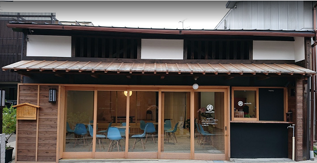

<!DOCTYPE html>
<!--
    Licensed to the Apache Software Foundation (ASF) under one
    or more contributor license agreements.  See the NOTICE file
    distributed with this work for additional information
    regarding copyright ownership.  The ASF licenses this file
    to you under the Apache License, Version 2.0 (the
    "License"); you may not use this file except in compliance
    with the License.  You may obtain a copy of the License at

    http://www.apache.org/licenses/LICENSE-2.0

    Unless required by applicable law or agreed to in writing,
    software distributed under the License is distributed on an
    "AS IS" BASIS, WITHOUT WARRANTIES OR CONDITIONS OF ANY
     KIND, either express or implied.  See the License for the
    specific language governing permissions and limitations
    under the License.
-->
<html>
    <head>
        <!--
        Customize this policy to fit your own app's needs. For more guidance, see:
            https://github.com/apache/cordova-plugin-whitelist/blob/master/README.md#content-security-policy
        Some notes:
            * gap: is required only on iOS (when using UIWebView) and is needed for JS->native communication
            * https://ssl.gstatic.com is required only on Android and is needed for TalkBack to function properly
            * Disables use of inline scripts in order to mitigate risk of XSS vulnerabilities. To change this:
                * Enable inline JS: add 'unsafe-inline' to default-src
        -->
        <!-- <meta http-equiv="Content-Security-Policy" content="default-src 'self' data: gap: https://ssl.gstatic.com 'unsafe-eval'; style-src 'self' 'unsafe-inline'; media-src *; img-src 'self' data: content:;"> -->
        <meta name="format-detection" content="telephone=no">
        <meta name="msapplication-tap-highlight" content="no">
        <!-- <meta name="viewport" content="initial-scale=1, width=device-width, viewport-fit=cover"> -->
        <meta name="viewport" content="width=device-width, initial-scale=1.0, maximum-scale=1.0" />
        <link rel="stylesheet" type="text/css" href="css/index.css">
        <title>SampleMap</title>
    </head>
    <body>
        <div id="mapid"></div>
        <script type="text/javascript" src="cordova.js"></script>
        <!-- オフラインで使用する場合のleaflet　↓↓↓ -->
        <link rel="stylesheet" href="css/leaflet.css" />
        <script src="js/leaflet.js"></script>
        <!-- <script type="text/javascript" src="js/index.js"></script> -->
        <script>
            //ズームコントロールを非表示
            let map = L.map('mapid', { zoomControl: false });
            // 地図を作成する
            let mymap = map.setView([35.494505, 137.500998], 15);
    
            //スケールコントロールを最大幅200px、右下、m単位で地図に追加
            L.control.scale({ maxWidth: 200, position: 'bottomright', imperial: false }).addTo(mymap);
            
            //ズームコントロールを左下で地図に追加
            L.control.zoom({ position: 'bottomleft' }).addTo(mymap);
            
            //地理院地図の標準地図タイル
            let gsi =L.tileLayer('https://cyberjapandata.gsi.go.jp/xyz/std/{z}/{x}/{y}.png', 
              {attribution: "<a href='https://maps.gsi.go.jp/development/ichiran.html' target='_blank'>地理院タイル</a>"});
            //地理院地図の淡色地図タイル
            let gsipale = L.tileLayer('http://cyberjapandata.gsi.go.jp/xyz/pale/{z}/{x}/{y}.png',
              {attribution: "<a href='http://portal.cyberjapan.jp/help/termsofuse.html' target='_blank'>地理院タイル</a>"});
            //オープンストリートマップのタイル
            let osm = L.tileLayer('http://tile.openstreetmap.jp/{z}/{x}/{y}.png',
              {  attribution: "<a href='http://osm.org/copyright' target='_blank'>OpenStreetMap</a> contributors" });
            //baseMapsオブジェクトのプロパティに3つのタイルを設定
            let baseMaps = {
              "地理院地図" : gsi,
              "淡色地図" : gsipale,
              "オープンストリートマップ"  : osm
            };
            //layersコントロールにbaseMapsオブジェクトを設定して地図に追加
            //コントロール内にプロパティ名が表示される
            L.control.layers(baseMaps).addTo(mymap);
            gsi.addTo(mymap);
    
            // WellCafeのマーカーを作成する
            //ポップアップする文字（HTML可、ここでは画像を表示）
            let sucontents = "WellCafe<br>"
            //ポップアップオブジェクトを作成
            let popup1 = L.popup({ maxWidth: 550 }).setContent(sucontents);
            let marker_wellcafe = L.marker([35.494505, 137.500998]).addTo(mymap);
            // クリックした際にポップアップメッセージを表示する
            marker_wellcafe.bindPopup(popup1);
    
            // 川上屋のマーカーを作成する
            let marker_kawakamiya = L.marker([35.4945524, 137.50075449999997]).addTo(mymap);
            // クリックした際にポップアップメッセージを表示する
            marker_kawakamiya.bindPopup("川上屋");
    
        </script>
        <!-- オンラインで使用する場合のleaflet　↓↓↓ -->
        <!-- <link rel="stylesheet" href="https://unpkg.com/leaflet@1.5.1/dist/leaflet.css"
            integrity="sha512-xwE/Az9zrjBIphAcBb3F6JVqxf46+CDLwfLMHloNu6KEQCAWi6HcDUbeOfBIptF7tcCzusKFjFw2yuvEpDL9wQ=="
            crossorigin=""/> -->
        <!-- Make sure you put this AFTER Leaflet's CSS -->
        <!-- <script src="https://unpkg.com/leaflet@1.5.1/dist/leaflet.js"
            integrity="sha512-GffPMF3RvMeYyc1LWMHtK8EbPv0iNZ8/oTtHPx9/cc2ILxQ+u905qIwdpULaqDkyBKgOaB57QTMg7ztg8Jm2Og==" crossorigin=""></script> -->
    </body>
</html>
